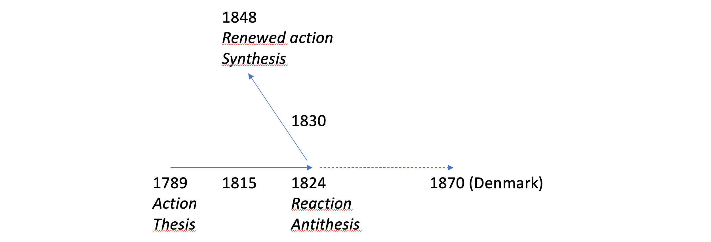

by
An introduction to the underlying concepts, composition, method as well as the editorial and translational history of the Main Currents.
Georg Brandes’ Main Currents in 19th Century Literature was published in six volumes between 1872 and 1890, and later in revised and translated editions.
His aim with the six volumes was to look at European literature as a unity and to elucidate a series of common traits in German, French and English literature in the period between 1789 and 1848. In so doing he was one of the first European literary historians to establish a comparative point of view, with among other motives the intention to cast light on Danish literature, which according to Brandes was forty years behind Europe in its development. “The comparative study of literature has the double advantage of bringing the foreign closer to us, so that we can understand it, and of distancing us from our own, so that we can see it in context,” Brandes announces in the introductory lecture of November 1871, which also establishes Brandes’ preeminent principles: “the belief in the right to free inquiry and in the eventual victory of free thought” (Brandes 1872a:8, 7).
Over the years Brandes delivered most of the lectures that form the basis of the six published volumes in his capacity as lecturer at Copenhagen University. Prominent civil servants and politicians denied him the professorship in aesthetics that had been vacated in 1872, so that for the rest of his life he earned his living as an independent writer. Through political maneuvering, he did in 1902 receive the title of professor with a corresponding salary “to support free scientific research,” which although funded by the university budget did not involve a formal post at Copenhagen University (see Pelle Oliver Larsen 2016:141, 386-91).
Brandes presented his narrative in the form of a drama in six acts, with liberalism as its structuring characteristic. In the foreword to the sixth edition of 1923, Brandes introduces the work by noting that:
Main Currents relates an episode of the history of the European soul, in that the work presents the course of development in the literatures of the major countries throughout the first half of the 19th century. The design of the work is political, not literary. (Brandes 1923:3)
To begin with, he portrays the revolutionary movements of the 18th century, culminating in the French Revolution of 1789. After the Revolution, which constitutes the first action, follows the reaction, just as a thesis is followed by an antithesis. With the defeat of Napoleon and the Congress of Vienna of 1814-15, the Church and the state in Catholic Europe came together; orthodoxy and authority became the new pillars of society. Ultimately there followed the overcoming of the reaction, e.g. a renewal of action. This was heralded by the Greek War of Liberation against Ottoman rule (1821-9), specifically the heroic death of Byron in 1824, which in Brandes’ account constitutes the decisive turnabout. After this the liberal movement picks up in the French July Revolution of 1830 on toward its breakthrough in France and Germany in 1848.
This simple and clear construction is illustrated by the following model, which at the same time demonstrates how culture and politics in Denmark were mired in the traces of the reaction all the way forward to 1870. Brandes saw it as his task to bring this reaction to a close and to bring Danish intellectual life into alignment with the liberal European main current.
Fig. Brandes' hegelian plot 
The model was inspired by the dialectical philosophy developed by F.W.J. Schelling (1775-1854) and G.W.F. Hegel (1770-1831) at the beginning of the 19th century, which came to play a powerful role in the Post-Hegelian tradition in which Brandes was schooled at the university. Each concept leads to its own opposite, its negation, but in such a way that the negated concept is sublimated, entering into a greater relation, a synthesis, which forms a new unity of opposites. Brandes explains this in the introductory lecture as such:
Reaction as such is far from the same thing as regression. Far from it! A true, appropriate, correcting reaction is progress. But such a reaction is powerful and short- lived and does not stagnate. After a time combatting the excesses of a previous period, after bringing to light what it suppressed, the new period takes up the content of the previous one, reconciles itself with it, and continues its movement.
Hereafter Brandes clarifies the challenge he is issuing, summarizing the reasoning in an image:
This is not what has happened here. When a stick has been bent in one direction, one straightens it out by bending it in the other direction—but one does not keep doing this. (Brandes 1872a:12).
The rhetorical presentation of the lectures was brilliant and impactful. Brandes was a splendid, rhetorically conscious lecturer. The very form of his presentation appealed to the passion its content would encourage. The style culminated in images that encapsulated and completed the manner of thinking, supplied the feelings with associations and provided his powers of representation or his imagination with perspective. When the argumentation was forgotten, its central points remained present in the consciousness of the spectators as an image. In the introductory lecture Brandes refers to Aesop’s fable of “The Fox and the Stork,” which illustrates his point about the comparative perspective, and concludes by invoking the motif of the current:
The major part of the work will entail opening up a multiplicity of channels through which can flow the streams and currents that have their origin in the revolution and the age of progress, thereby putting a stop to reaction in all those areas in which its task has historically come to an end. (Brandes 1872a:28).
The goal of the lectures was to bring Danish intellectual life and politics into agreement with development in Europe. Brandes adopted the contention of the French philosopher and literary historian Hippolyte Taine (1828-93) that a country’s literature reflects “the entire history of its views and feelings” (Brandes 1872a:9); as far as Denmark was concerned, this was a history in bits and pieces, with sizable lacunae and without a great deal of independence, and therefore in a broad sense a history subordinated to influences and impacts from abroad. This takes into account the fact that not all European currents reached Denmark, indeed sometimes only those of the reaction, as was the case, according to Brandes with the restorationist containment of Enlightenment ideals and revolutionary ideas. Now this backlog should be overcome, and literature should express existing life and relate itself to the conditions of the present instead of viewing life through the lens of or relating to the past. To be oneself is to be modern, and that a literature is alive is demonstrated when it “provokes debate” (Brandes 1872a:15).
This polemical sting in the form of the juxtaposition of the literatures of Europe’s major countries and a stagnate Danish culture was the launching point of Main Currents, particularly in its first two volumes. In the revised editions of all six volumes, which came out between 1891 and 1898, a measure of the polemical remarks and comparisons were removed, such that the work came across more as a European literary history written for European readers. In the English translation, for example, the introductory lecture is nearly entirely edited out. On the one hand this meant that the work lost a measure of the polemical bite that had resulted in such intense attention in Denmark and Scandinavia, while on the other, in the European context, it was evaluated according to a more general, literary historical approach.
In the meantime, as the two final volumes were completed in 1882 and 1890, the movement that Brandes (first with his 1883 book The Men of the Modern Breakthrough) would come to call the “Modern Breakthrough” became a living reality, even if he himself sought to revise his views.
The following describes in part the fundamental characteristics of the development (or rather perhaps change) that takes place between the first volume and the last, and in part how precisely these fundamental characteristics were at the center of the textual revisions to which Brandes over the course of time subjected his narrative, not the least with respect to the first two volumes.
Emphasis is here placed on citing from Brandes’ texts in full, because less well known and less accessible texts are often discussed, and because it is important to view the critical individual citations in their initial form and context.
A functional relationship between the great and the small runs throughout the work of Georg Brandes, in both his earlier and later aesthetics. The great is that which delivers the abundance of details and places them in perspective. The small or the singular, if it cannot be explained, appears as chance, and it is chance that becomes the immense challenge of post-Hegelian aesthetics.
In his literary criticism at the end of the 1860s, in order to break with the harmonizing idealism of Biedermeier culture, Brandes had, inspired by Taine, pushed his frame of explanation and his perspective – “the great” – as far outward as was possible, while at the same time seeking out “the small,” the actual, the earthy details. As suggested in the 1869 essay on Henry IV, Part One, “’The Infinitely Small’” and the ‘Infinitely Great’ in Poetry” (published in the journal Illustreret Tidende and included a year later in the book Criticism and Portraits), the scope of characterization of a literary figure should be as wide as possible.
In reality this involved a difficult process of balancing, which can be illustrated with a longer citation from Brandes’ dissertation on Taine that concerns whether an individual should be viewed as a whole or should be divided up into analyzable parts:
As far as the individual is concerned, it is often doubtful whether the natural groups of his intellectual production would lead us to group them with the individual himself as the center. Because of the imperfections of the individual, he only strives to be an intellectual organism, but in reality and at many points, intellectually as well as bodily, he is no more than an aggregate. Even the unity of consciousness is more or less like the freedom of the will only an ideal, not a reality. If as I believe it to be correct the task of scientific analysis is to dissolve artificial groups and form natural ones, then sometimes the correct scientific approach will be to treat a part of the work of the individual as literary history, another as military history, and a third as criminal history or the history of customs. Just as the gradient of a falling stone and the law of gravity belong more closely together than the gradient, color, and sound we unite in our minds when we think of the stone, so it will be also most effective to understand the different aspects of the diffused personality on the basis of the different intellectual currents of the age, rather than as emanating from the midpoint of the personality. (Brandes 1870b:33-4, italics author’s)
The individual can therefore be understood as either an aggregate or an organism. His productivity or his works can (as for example in Emigrant Literature) be understood as a manifestation or a product of intellectual currents which lend themselves to analysis, or with the midpoint of the personality as the source. In his dissertation Brandes asserts (as in the italicized text above) that although the goal has yet to be reached, the scientific method of analysis and the aggregate perspective constitute the proper path forward.
In Explanation and Defense, published just a few months after Emigrant Literature, Brandes wrote that he:
only portrays works in so far as that they express the feelings and thoughts of the age in a lively manner, that is to say with constant reference to their cultural historical worth. My approach is thus not to provide summaries; I have continuously emphasized the critical points of view, I have comparatively drawn new parallels, and I have demonstrated the linkage between no small number of literary phenomena that previously were viewed as unrelated (...) I have long followed this method that I have developed and explained in my dissertation, I have employed it in a host of shorter critical pieces (...) I read the history of an age in its types (...) According to the method I follow, a work has value to the same degree that it is typical . . . (Brandes 1872b:7-9).
After his dissertation and a European grand tour between April 1870 and the summer of 1871, Brandes in fact attempted to go further on the question of the formation of consciousness. Main Currents was initially envisioned according to this scientific orientation. Immediately after the appearance of the first volume and his defense of it in the fall of 1872 and a series of lectures on recent French drama, Brandes attempted to return to this question. During the entire summer of 1872 he was occupied with a work on the association of ideas. Associationist psychology was an effort to break with the doctrine of innate ideas and the unity of the I or of the personality. Inspiration was provided from Stuart Mill and Taine, but perhaps also from his slightly older studies of J.F. Herbart.
In a letter to his friend Julius Salomonsen (1847-1924), dated “Sunrise, July 20th 1872,” the project (or vision) is presented in this manner: “And this idea is so lovely, so lovely!
The Association Conceived and Represented as Human Cognition Foundational Principle by G. Brandes I’ve come no farther than this, but soon, soon it shall be four to five hundred pages and many shall read it with admiration (...) Dear friend, if I should kick the bucket before I finish this, you must tell everyone that I wanted to carry out a depiction of the above in Danish and thereby ground our philosophy here in Norden on a new basis, a true basis, which permits the demonstration of altogether determinative, incontrovertible laws, quite like in mechanics and chemistry. You can also let it be known that all the other philosophy here in Denmark amounts to figments of the imagination and so much chatter, idealistic dreams, and thus allow me to acquire the reputation of one who defined philosophy as science of the laws of the intellect, and who ventured to assert that as such it is of the same rank as the natural sciences, which are sciences of the laws of nature. All philosophy is psychology. All psychology is based on observation. All psychology is the doctrine of associations, associations and sense impressions, of images, of ideas and of names. The associations are the mortar that holds together the bricks in the grand edifice of the intellect. (Georg and Edv. Brandes 1939:279-80)
Yet that very same summer Brandes had to abandon the project. In his memoirs he laconically noted that “my abilities were not up to the task of elaborating the fundamental thoughts occurring to me, and after a months I let the work go” (Brandes 1939:279-80).
Traces of the problematic and its concepts, however, are found in the chapter on “Romantic Reflection and Psychology” in The Romantic School in Germany (Brandes 1873:207-), in which the following passage at long last establishes distance from the self-dissolving determinants of the aggregate point of view:
But if the human being is now by the necessity of nature multifaceted and split and divided up by nature, then it is one through freedom. Freedom, will and resolve make a human whole. If the human being as a product of nature is only a multiplicity held together more or less securely by associations, then the human being as intellect is an individuality, and in the will collects all the elements of the intellect and thus functions like the edge of a sword. (Brandes 1873:213).
As so often in Brandes, the reasoning is summarized as an image. And the sword elegantly cuts open the Gordian knots that had troubled his dissertation. In comparing this citation with the context and the resonance in the second edition of the book (Brandes 1891:257-69), it is evident that “idea-associations” as a concept has been supplanted by “idea–connections” and “thought-chains,” such that the concealed reference to the contradiction ridden dilemma raised by the dissertation fades away. At the same time the “freedom” that rendered the human being as one (note the inserted “however” below) is supported by a doctrine of the personality:
[the human being is] however as the healthy, vigorous personality, one. Purpose, will, resolve make the human being whole. If the human being as product of nature is only a multiplicity held together more or less securely by chains of thoughts, then the human being as intellect is a unity (Brandes 1891:268).
A vitalistic and Nietzschean solution is thereby provided for the psychology of the self. This change in argumentation and conceptual formation, which has roots in his work on the dissertation, can be seen as a recurring feature in the revision of especially the first volume, but the accentuated conception of the personality can be detected in all six volumes
When Brandes returned from his travels in Europe in the summer of 1871 he had first thought of delivering a series of public lectures on “Recent French Drama,” a theme with which he was familiar from his role as theater critic at Illustreret Tidende since 1867. (The lectures were published in 1978 by Henning Fenger as Georg Brandes and Recent French Drama. Theater Reviews and Dramaturgical Lectures, 1865-1872). The lectures on drama were however put off until the spring of 1872, because his mentor of many years, the philosopher Hans Brøchner (1820-75), found them to be too narrow and unimpressive. Instead, as noted in his memoirs, at the beginning of October, Brøchner proposed a broader theme for lectures that could have greater impact. Brandes also mentions in the memoirs that his chief concern at the time was a (polemical) diagnosis of “the cultural standpoint of Denmark at present and a critique of the literature of its past, which would function as my starting point” (Brandes 1907:62-3).
Shortly thereafter, Brandes came back to Brøchner with a proposal for six long series of lectures, collectively titled “Fundamental Currents” [Grundstrømninger]. After consultation with Brøchner, this was changed to “Main Currents” [Hovedstrømninger], which is the designation Brandes employs in a letter to Emil Petersen, dated October 20th, 1871 (Georg Brandes and Emil Petersen 1980:142).
The first of the lectures was delivered at 6:00 PM, November 3rd, 1871, while the last was given on December 16th. Shortly after, on the 27th, Brandes summarized his central disposition for all six volumes in a letter to Taine, adding “mais je n’ose pas encore le faire imprimer; les orthodoxies sont trop en rage contre moi” [but I dare not allow this to be published, for the orthodox types are too angry with me] (Brandes 1952:7).
The final explanation of the relationship between Brøchner and Brandes is provided by the philosopher Carl Henrik Koch. His (prudent) conclusion is that the program of ideas – freethinking, freedom of intellect, free humanity – does indeed refer back to the conclusion of the 18th century, but that it is first and foremost the voice of Brøchner (rather than Hegel) that stands behinds these words. It was Brandes himself, however, who radicalized Brøchner’s conception of freedom (Carl Henrik Koch 2000:128-50).
As noted, the six volumes of Main Currents were intended as a drama in six acts, determined by the literary groups characterized in each. First the emigrants exiled by the revolution, next the German Romantics and their reaction against the revolution, and in the third volume the corresponding course of reaction in France. The reversal in the drama arrives with English Naturalism in the fourth volume, whereas here “Naturalism” signifies the love of nature rather than Émile Zola’s later iteration of the impartial depiction of reality. Byron’s death in 1824 during the Greek War of Liberation against the Ottoman Empire (1821-9) marks for Brandes the decisive positive turnabout in European liberalism. The fifth volume concerns the liberal movement as manifested among other places in the July Revolution of 1830, with Balzac as its leading author, while the sixth and concluding volume treats the corresponding movement in Germany forward to 1848, with Ludvig Börne and Heinrich Heine as the main figures.
The composition was first and foremost inspired by the liberal German historian and politician G.G. Gervinus (1805-71) and his work Geschichte des. 19. Jahrhunderts seit den Wiener Verträgen (8 vols., 1855-66), which Brandes had borrowed from the Royal Library in August 1871, and Hermann Hettners’ Literaturgeschichte des achtzehnten Jahrhunderts in drei Theilen (8 vols., 1856-72), also borrowed at the same time (see bibliography in Henning Fenger 1955:445, 447). These were especially significant for the critical concept of the composition as drama (the term “emigrant literature” and the prominent placement of Madame de Staël are owed to Gervinus) and for the description of the genre bending currents, born by ideas and fixed into types that are representative of an epoch. The relatively plentiful and independent portraits of woman that Brandes inserts in especially the first two volumes are also primarily due to Gervinus: beyond Madame de Staël, these include George Sand, Dorothea Veit, Caroline Schlegel, Madame de Krüdener, Rahel von Varnhagen, Bettina von Arnim, and Charlotte Stieglitz (see Gunnar Ahlström 1937).
Brandes’ portrayal of political liberalism contains an inner tension between two
main currents that he had lucidly described in the opening pages of The
Reaction in France (1874). One emanated from Rousseau. It is the
In order to put the main lines clearly into perspective, the Rousseauian thread can be traced forward to the image of the centralized state with subordinate civil servants, which Brandes himself imagined during his stay in Berlin between 1877 and 1883, albeit also – in an early foreboding image of socialism – tempered by fear of the tyranny of the majority. In a more positive variant Brandes also considers a solidaristic social utopia, the idea of a better society with happiness for the many.
The Voltairean thread concerns the human being as an autonomous individual, described among other places in European Romantism, with which the young Brandes was familiar. Here the individual begins where the state ends, and here an elitist cultivation of intelligence and sophistication can thrive. The implications for society can be vague, but it generally involves a truer and more just society, in which the autonomy and value of the individual is respected.
In his Den ensamme. En motivstudie i det moderna genombrottets litteratur (1961), the Swedish literary scholar Thure Stenström has described the two traditions in the literature of the Modern Breakthrough as respectively “naturalistic feeling of community” and “Romantic individualism.” The two traditions can be traced as clear threads all the way through Main Currents.
In the first years of the 1870s, Brandes read up on socialist theory, especially the Saint-Simonians and Ferdinand Lassalle, about whom he wrote a book, first published in German in 1877 and then in Danish in 1881. In the introductory lecture he had emphasized how Danish society had developed such that “it bears the features of tyranny under the mask of freedom” (Brandes 1872a:15). Brandes had experienced and described the reaction as an amoral duality. A few years later, through Lassalle (as well as an image borrowed from Sainte-Beuve), Brandes came to understand the bourgeois reaction as an element of class struggle:
it can be seen that the bourgeoisie tried to pull the ladder up with it as soon as it had reached the top. Its first action after having itself secured its status through the pen was to take the pen out of the hand of the proletariat. (compare Lassalle: Arbeiterprogramm). (Brandes 1874:46 – in the second edition the parenthesis around the Lassalle citation are eliminated: Brandes 1892:41).
Yet later in the book Brandes declares his preference regarding the Rousseauian and Voltairean traditions:
The central idea is that it is not the family, as is usually asserted, but the individual that constitutes the fundamental pillar of society, and that the individual is sovereign. The sovereignty of the individual, e.g. the freedom of the press, speech, travel, exchange, inquiry and freedom of feeling. From this point of view the only possible defense of a law that constrains freedom is that such a law, through the provisional impingement upon freedom, is the only means of acquiring a more perfect arrangement with complete freedom, for freedom is the ideal of individualism (Brandes 1874:151-72).
In each of the six volumes, Brandes devotes the introductory chapters to describing the historical and political background of the works he will analyze, which is generally followed up by a corresponding summary at the conclusion. His assertion that “first and foremost and everywhere I trace the literature back to life” (Brandes 1873:4) functions as a recurring declaration of fighting words. Yet rather than a relationship of dependency, it is more accurate to say that Brandes – as well oriented and well informed as he was – outlines the background and the context only for those works of literature that concern him. The connection between background and foreground is established with the help of types, in which the societal tensions of an epoch come to expression symptomatically. In Emigrant Literature it is especially Goethe’s Werther and Chateaubriand’s René that function as clear examples of a passionate individual who in the effort to emancipate himself collides with societal limitations: “the principal source of Werther’s sorrows is the discordance between the infinity of the heart and the strictures of society” (Brandes 1872a:55). In the rhetoric of his presentation, these examples were accompanied by reassurances that the author “portrays for the reader, purely historically and scientifically, a state of the soul that historically has revealed and documented itself in the literature (Brandes 1872a:89-90). “The literary historian who moves from one variation of a type of the age to another proceeds as does the natural scientist, who pursues the same transformation of fundamental forms” (Brandes 1872a:91).
In the course of the six volume Brandes found it increasingly difficult to maintain the typological matrix, and in looking at the formulations in the revised editions it is often apparent that the abstract ideas and movements that originally functioned as the frame were rewritten as concrete influences and thoughts. This is why many of the thematic chapter headings of the first editions were replaced with author names in the second editions. This coheres with a positivistic biographical trait that is more closely explained below.
At the same time it also became clearer to him that while the typological concept ensured a strong conception of the presentation and invited comparative characterization of the variants of types, this occurred at the expense of a coherent reading of the individual literary works. This contributed to the weakening of Main Currents as a literary historical handbook in comparison to the more recent national literary histories that came on the market (Danish literary history writing is described in Flemming Conrad 2006).
Brandes was a forerunner to the kind of comparative literary studies that only began to develop in earnest in the years following. The concern of Main Currents was not so much comparative literary study in the modern sense of the word, that is the study of impacts and influences between literatures, but a general or universal description of the major European literatures in (polemical) comparison with that of Denmark.
Methodologically speaking, the immediate inspiration for the six volumes were the theoretical books of Hippolyte Taine and his English literary history Histoire de la littérature anglaise (4 vols., 1864, DA 1874-7). Brandes specifically employed Taine’s analogies between aesthetics and classifying natural science in Emigrant Literature. The overarching and determinant factors that Brandes sought to identify were “race,” “milieu” and “moment,” while the material and the authors were arranged in “schools” around “the dominate character” of a single figure.
In order to honor the triumphant practice of the natural sciences, scientific literary study began with a narrowing of perspective and interest to controllable and manageable individual processes, in which the principle of causality could be employed – and employed with success.
In Germany during the period in which Brandes worked, a positivistic literary studies and a praxis of literary history in a narrower sense developed, associated with figures such as Wilhelm Scherer (1841-86) and his successor in Berlin, Erich Schmidt (1853-1913). At the same time it was marked as a distinctly national practice of literary history, appropriate to the German Reich that was established in 1871 under Bismarck’s reliable leadership. Here the critical, source-based study of impacts and influences was developed and refined. In place of the open expanses of “race,” “milieu” and “moment,” the influential Wilhelm Scherer, whom Brandes got to know during his years in Berlin, inserted the “closed” categories of “das Ererbte,” “das Erlernte” and “das Erlebte.” In France, Taine’s pupil Ferdinand Brunetière (1849-1906) isolated the cultural historical “moment,” and within that the more narrowly literary, more specifically determined genre.
Now literary studies began to seek the impacts and influences of individual concrete events, of personal incidents or of reading. In polemic against idealism, scholars sought out the laws of imagination in order to uncover empirically how the poetic imagination functions; these conditions lent themselves to isolation and description, while the more comprehensive – and decisive – societal logic, which is found between the individual events and tensions and renders them as manifest forms or as symptoms, were much more difficult to handle. Here the category of “experience” served a key function as the smallest possible unity whose impact could be definitively traced. Literary observation was interested in experience not for what it resulted from, but for what it resulted in. Biography or the biographical frame now became the manner of integrating the details investigated. At the same time it is an approach that at many points appeals to empathy, understanding and identification.
This development in the direction of positivism was strongly enhanced by the emergence of national philologies and the establishment of corresponding university curricula (see Klaus Weimar 1989 and König and Lämmert 1993. For Anglo-American development see Gerald Graff 1987. The French development is covered in Carl Fehrman 1999).
Yet Main Currents landed in Germany before all of this happened. The work fulfilled a characterizing and perspectivizing function in a period in which the establishment of national literary studies had yet to acquire a solid foundation as an independent discipline. As the new discipline was relatively rapidly developed at the university lectern, Brandes’ work was on the other hand progressively dismissed and marginalized, since it did not fulfill the ever-growing demands of the national philological school.
Max Koch established Zeitschrift für vergleichende Literaturgeschichte in 1887, but around 1890 the center for wider comparative literary studies shifted from Germany to France. In 1896 Joseph Texte (1865-1900) took up the first chair in “littérature comparé at the University of Lyon; later figures in the French comparative tradition include Fernand Baldensperger and Paul van Tieghem. In Denmark Valdemar Vedel (1865-1942) became first lecturer and later in 1911 temporary professor in general and comparative literature; in 1918 the professorship was made permanent.
Over the course of time Brandes produced a number of lesser studies within the more narrowly defined comparative tradition, for example “Goethe and Denmark” of 1880 (republished in Brandes 1883b) and “Henrik Ibsen and his School in Germany” of 1890 (republished in Brandes 1906), but overall the rapid development of the discipline and the transfer of its scholarly center from Germany to France served to diminish the literary historical significance of Brandes’ opus magnum.
Instead he used his status as critic and artist as a bulwark against the intrusive demands of the professionalized discipline. In the foreword to People and Works (1883) he suggests that literary criticism could be viewed as an applied science: “it is this to a certain point; but it is no less an art; for no methodical investigation can provide us with the key to a coherent human intellect” (Brandes 1883b:V). At the conclusion of the sixth volume of Main Currents Brandes defends himself against the condemnations of his Danish critics:
Here is the answer, that viewed impersonally the literature of a half century is only a chaos of hundreds of thousands of works in a great number of languages, and that the genuine Procrustes who has grouped, contrasted, stylized, emphasized and de- emphasized, expanded and contracted, placed in full light, half light or in shadows, is none other than the power normally referred to as art. (Brandes 1890:573).
Main Currents, from volume to volume as well as from the first editions to the later revised versions, is characterized by a clear and continual movement away from the broad, Taine-inspired foundation toward a narrower focus on the biographical. This was the result of the more or less conscious disciplinary and methodological development Brandes underwent during the more than fifteen years the six volumes were under construction. But when because of his own lack of forethought he found himself in a conflict over the publication rights to the German editions, he wrote an account, blessed by the wisdom of hindsight, of the changes to the foundation of the work he had undertaken prior to the new German editions. This was thus a partisan brief in a court case, yet at the same time noteworthy as testament of his methodological self-understanding. It was formatted as a letter to his (new) publisher, Hermann Credner (1842-1924) of the house Veit & Co., but a Danish version was published in Politiken on July 4th, 1887.
The first four volumes of Main Currents were quickly translated into German by Adolf Strodtmann (1829-79), issued through Duncker of Berlin between 1872 and 1876. After bankruptcy in 1886 the firm was acquired by the book publisher Hermann Barsdorf. Brandes was not content with the arrangement and in 1880 had entered into an agreement with Veit & Co. for a new edition, now titled Die Literatur des neunzehnten Jahrhunderts in ihren Hauptströmungen dargestellt. Although the remainders were transferred to Veit & Co., the house did not, because of carelessness on its part as well as on Brandes, secure the rights to Strodtmann’s translations. The Danish government did not sign the 1886 Bern Convention, which concerned publication rights in countries outside the native lands of authors, until 1903, so Barsdorf issued a whole series of new printings without the agreement of Brandes or the payment of royalties to him. To avoid additional legal troubles Brandes was compelled to revise the collected volumes of Main Currents; Veit & Co.’s edition was thus only completed in 1901 (the complex legal issues are explained in the chapter on “The Barsdorf Nightmare” in Jørgen Knudsen 1994:414-421; see also Jens Bjerring-Hansen 2008:150-67).
According to the agreement with Veit & Co., the new and revised editions of the first four volumes were to be made available in 1882. The first and the fifth were completed respectively in 1882 and 1883. But when the second volume appeared in 1887, Hermann Barsdorf, who had acquired Duncker and thus the rights to the old translations, filed suit on the grounds that the new volume relied too heavily on Strodtmann. It was in this context that Brandes published his account. The case passed through several courts, concluding in 1889 when the Reichsgericht ruled in Barsdorf’s favor. He was therefore permitted to continue to sell the published and the revised translations for which he himself made provision. They were priced much cheaper than Veit and Co.’s revised editions, which consequently sold poorly.
When Brandes published his Gesammelte Schriften with Langen in 1902, he returned to the Barsdorf conflict in his foreword:
The majority of the books published in Germany with my name on the title page are books I have never seen, much less examined or published (...) A thrifty publisher, whose reputation does not at all correspond to his vigor, has acquired my entire authorship in German against my will and in spite of nearly twenty years of protest on my part; he has treated my books as he desired, equipped them with ballyhooed and arbitrarily chosen titles, supplied them with additions and supplements, or cut the majority of them to pieces and thus sold them on the retail market. I must here once again state what I have so often expressed, that I do not have the most minimal relationship to the innumerable books Hr. Barsdorf of Leipzig has published under my name, and would never acknowledge them as my own (In Danish in Brandes 1906:285-9; cited portion 287).
The following series of citations provides examples of how Brandes found his way to the category of “experience” as a central explanatory factor that secured causality in a positivistic sense while at the same time narrowing in the form of integration toward the biographical frame. The point of departure is the account Brandes provided in the summer of 1887 during the conflict with Barsdorf, in which he explained how his aesthetics, and therefore his construction of Main Currents, changed along the way.
The point of departure is the account Brandes provided in the summer of 1887 during the conflict with Barsdorf, in which he explained how his aesthetics, and therefore his construction of Main Currents, changed along the way.
“A Letter from Dr. G. Brandes,” Politiken July 4, 1887:
The central understanding of aesthetics has changed since 1873.
At that time my conception of history was still abstract. I evaluated literature before all as an intellectual orientation. My understanding of freedom and progress was still doctrinaire. My own combative position endangered my impartiality. Thus my judgement of the Romantics was determined especially by their religious and political attitudes. There was much less to say regarding their talent.
This is now completely changed. By virtue of innumerable interpolations, excisions, changes, in many cases of small size yet consequential, an entirely different poetics and historical understanding have come into being (...)
When I began to work on Main Currents in 1871, I was in my intellectual orientation still metaphysically minded. I overlooked the personalities; they were only the organs of the Ideas. As the title indicates, I was interested only in the currents of the world of ideas. The individualities were carried along by the currents, pulled apart by them; they were the spokespersons of the ideas. The personalities remained uninteresting to the author.
Thus not a single biographical sketch is found in the first part of the oldest edition of Main Currents.
In the old edition of the second part there is progress, in that the biographies are Included, but as a rule they are short and incomplete and -- as is wholly characteristic – they are in general tacked on at the end as supplements less important than the portrayal of the works.
First the works are reviewed, such that when the whole intellectual life of the person is characterized, there follows, as noted, a short description of the life of the personality, in which all that is portrayed has its roots. The works do not unfold themselves from these roots. They are breathed into life by the ideas. The human being, this “slack” that is left over when the ideas are treated, this nonetheless indispensable slack, was in the end included as a necessary evil. Compare for example the treatment of Kleist.
There is therefore not a single actual portrait found in the book. I was not capable of doing as much.
It was only much later that I learned that precisely on this point I was possessed of a strength. And when I no longer subscribed to the Hegelian contempt for the individual, no longer believed that the abstract world spirit brought forth the works, I began to immerse myself in the historical personalities and show how their production followed from their lives (...)
Therefore: the task of the work, which initially was to agitate, became purely scientific in the second edition, what was national and Danish became universal. The understanding of poetry and art was at that time conditioned by the tendentiousness; it is now otherwise. Ultimately the relation between the ideas and the personalities has been reversed, and to this change corresponds the wholly distinct composition of the work. (Essential sections of the article were worked into the article “The Heibergian Aesthetic” in the journal Ny Jord, 1989, III:1-23; this was thereafter published in Essays. Danish Personalities, 1889:136-85, as well as, with changes to the language, in the Samlede Skrifter, I, 1899:494-512; cited portion 496).
Brandes’ article was a partisan brief in a legal conflict, so it was useful for him to trace the lines precisely and to prove how thorough going the changes had been. Yet it is however evident that the biographical approach appears in various preliminary forms and variants in the previously published editions, and at the same time that his eye for the currents has hardly vanished completely in the final volume or in the revised editions already undertaken. But it is important to recall that the majority of the translations of Main Currents to foreign languages relied on the revised editions, while in the case of Germany it was presumably the translations from the original editions that circulated most widely.
In a continuation of Brandes’ account, the following examples demonstrate how, step by step, Brandes established the structure by which the noun “experience” [Da. oplevelse, Ger. Erlebnis] entered the language, it having appeared for the first time in Danish in his 1877 monograph on Kierkegaard.
() (…) to what degree the subjects are selected from purely formal points of view. One of our preeminent contemporary poets once in conversation made me aware that “The Virgin of Orleans” is not “experienced” [oplevet], not conceived from strong, personal impressions but construed (Brandes 1873:41).
As obscure, as allegorical as this novel [Heinrich von Ofterdingen] is, it touches on something of value, such that as much as any other living work of poetry it is experienced [oplevet] (Brandes 1873:259).
This trait was grounded in something that had been experienced [Oplevet] (Brandes 1874:204).
These works are not like those of the best poets products of (…) profoundly vital, personally experienced [oplevede] events (Brandes 1875:181, on the novels of Walter Scott).
That which is mere poetry in this narrative (…) is unexperienced [uoplevet] and therefore uninteresting. That which is only copied from reality (…) is as merely experienced [oplevet], not poetry, and likewise uninteresting (Brandes 1876:312).
But the degree to which Kierkegaard’s life was now stirred up is amply testified by the immensity of the forthcoming production. For there is of course no feeling, no passion and no suffering in anything that has not lived within the heart of the author. The river cannot rise higher than its source. (…)
There are creative spirits who require much great fortune or experiences [oplevelser] in order to produce a minor work. These are the kinds of poets who produce a drop of rose oil from hundreds of pounds of rose leaves. And on the other hand there are talents whose nature is so fruitful, whose inner climate is so tropical, that out of the wholly peculiar conditions of daily life they experience [opleve] with the highest energies they are able to draw out a whole series of significant works. They resemble the treeless islands of the South Seas, on which passengers from a passing ship leave a few fruit seeds and which many years later are covered with mighty forests.
Kierkegaard belonged to the latter type. He was unreceptive to the great mass of life impressions, because early on only a handful of them so entranced him that he could never escape them or create space for new ones. He had the poet’s need to diffuse himself, to send out a host of different figures from the enclosure of his personality. Yet at the same time he did not possess the poetic powers to provide, through a complete transformation of his life impressions, an independent life for them outside of the various figures, figures that appeared in an abundance of forms that were either irrelevant to him or only emerged from situations alien or heterogeneous to his personality. Instead of transforming his life impressions he only recast them; instead of transforming himself he disguised or masked himself. He never concentrated himself as intensely as his mere thoughts, he never diffused himself as intensely as does the true poet (Brandes 1877:76-8).
He (Balzac) had still not experienced [oplevet] anything that could provide for his creations value or worth, yet his powers of imagination were lively and eternally fruitful and he had read enough to provide his creations with a passable form in the usual sense of entertaining material (Brandes 1882:227).
This portrayal undoubtedly owes a part of its incomparable mastery to the faithful re- presentation of personal experiences [oplevelser] (Brandes 1882:300, on Stendhal).
The citation from the book on Kierkegaard reveals the path toward the principle in what was then a groundbreaking work. It was Brandes’ first book dedicated to a single authorship, the aim of which was to provide an account of Kierkegaard’s production by showing the works to be reflections on the decisive events or “experiences” of his life and development: his relation to his father, to The Corsair and to Regine Olsen. Brandes sought – and found – the decisive genetic connection between life and work in the experiences that conditioned the poetry. Moreover, the understanding of causality with which Brandes operated was in no way simplified. His differentiated elucidation of the relationship between desire and powers, between thinkers and poets, is quite noteworthy, and thus the Kierkegaard citation is provided in full.
The change in his methodological and ideological approach can be clarified by looking at Brandes’ understanding of the key figure of Byron.
Already in the introductory lecture, Byron was introduced as the man who brings about the reversal in the great drama: “the Greek War of Independence breaks out, and a breath of fresh air travels throughout Europe; Byron falls a hero for the Greek cause, and his heroic deed makes an enormous impression on all the writers of the Continent” (Brandes 1872:13).
In April and May of 1872, some months after publication, Brandes gave six lectures on recent French drama. At the conclusion of the first lecture, he reiterates and expands the central position of Byron as an expression and a summation of the liberal movement:
But in Byron himself the spirit of rebellion was incarnated. In his birth, his bodily development, his war against the pharisaic public opinion of England, his Rousseau- influenced love of nature, his hatred of civilization, which to him did not seem to have birthed any other fruits than pestilence and cancer, war and immorality, he stood outside of society (...) American republicanism, German freethinking, French rebelliousness, Anglo-Saxon radicalism seemed to be united in this one intellect. His death was a boon to the universal cause of freedom. The Holy Alliance seemed to have cowed the spirit of revolution for all time. Every bond that connected the Restoration to the Revolution was severed. Then this poet tied together the threads that had required a million soldiers to cut apart. When the rebellion had been suppressed in all countries, when the press had been gagged, when science had humbled and subjected itself, this son of the imagination, this poet as free as the air, entered himself into the lists and so awakened the spirit of the previous century (here cited from Fenger 1978:102-3).
This vision is reiterated and modified in The Reaction in France (1874), in which Brandes in part compares literary types and in part summarily goes back and forth between them and the historic personages of Napoleon and Byron:
Napoleon had displaced Werther, René and Faust, Byron’s promethean and desperate heroism displaced Napoleon. He accorded wonderfully with the demand of the age (...) It was the spirit of rebellion that radiated from him and through his mouth united the young generation to a society of world citizenship (,,,) Byron let loose all passions. It was not for him to attack at a single point, but to revolutionize the minds, to awaken indignation at tyranny. The Holy Alliance believed (...) (Brandes 1874:348-9).
The point at which the citation ends is followed by a few lines in accordance with what Brandes had said in the spring 1872 lecture series, but in the published citation it is now marked with a citation from Gervinus’ Geschichte des 19. Jahrhunderts seit den Wiener Verträgen. Brandes relies on the view of the post-Hegelian Gervinus, according to which the great individuals of history can only be understood in their context, that the leader is only the leader of the masses, because he is an expression of a tendency of development in society.
In Naturalism in England Brandes has escaped the post-Hegelian view and the practice of comparative characterization in favor of an interpretation grounded in biography.
The material on Byron consumes the last six chapters of the book, in all more than 170 pages. In the previous volumes of Main Currents Brandes had employed themes or problematics as chapter titles, but with his portrait of Byron the name of the author is placed within the chapter titles. This was the longest piece Brandes had until then written on a single person, and in contrast to his previous work the first to be built up purely biographically. Byron’s history of development is portrayed with emphasis on his parents and upbringing, especially the decisive events and their significance in interplay with his character traits. The meaningful traits are not reflected against society, but in relation to the development of his personality. Brandes summarizes the troubles from which he emerged by noting that they “acquired their significance by early on driving Byron, who as a young aristocrat could easily have occupied himself with the sensibilities of his class and kin, exclusively toward the resources of the single, isolated personality” (Brandes 1875:378).
The event which “acquired decisive meaning in his life” (Brandes 1875:469) was falling in love with young Teresa Guiccioli. The portrait is constructed such that Byron’s life history proceeds from the desire for freedom, from society toward solitude and from culture toward nature. Byron sought escape from society toward “localities outside of civilization, where individuality could develop itself freely and without regard to any conventional strictures” (Brandes 1875:389). “He, who descended in a straight line from Rousseau, felt himself powerfully drawn to all the people living in a ‘natural state’” (Brandes 1875:390). Feudal Albania became that “nature” in which the individuality and true humanity of the free world citizen could unfold itself. “He now grasped freedom in the wide and full and universally human sense of the word. He now sensed that free thought is the point of departure for all life of the spirit (Brandes 1875:429).
The section “Byron. The Self-Absorption of the I,” thus concludes:
Thus the poet conducts his worship service and gathers his soul in devotions. He renounces all “houses of idols,” Gothic churches as well as Greek temples, and like the Ancient Persians built their alters on the highest mountains overlooking the earth, he bows his head in the great church of nature, which consists of the earth and the air (Brandes 1875:433).
Byron here does not just reject culture, for nature becomes a paradise and the human being as primordial as Adam. Brandes refers here to the “ur-history of the race.” Logically enough, the revolutionary spirit culminates atop the Alps:
On the lonely heights above the snow line, where human weakness and pliability no longer thrive, where his soul first breathes freely, and the Alpine landscape by the necessity of nature forms the frame round his hero who in his stern wildness is akin to it (Brandes 1875:446-7).
Characteristic of the biographical interpretation is that it is precisely at this point that Brandes by virtue of his own experiences inserts himself into Byron’s situation:
I recall that one evening I stood on Rigi Kulm and observed the lovely lakes at the foot of the mountain, and the small clouds that far down passed over them . . . It was visions of nature such as this that provided the material for the apparitions that overcame Manfred. Passage after passage of Byron’s journal is incorporated into his poem. (Brandes 1875:436-7).
(Brandes cites from the article “A Few Notes on Travel. (From a Diary)” in Illustreret Tidende, May 2, 1869:262; the article is based on a letter to his parents dated August 14, 1868, published in Brandes 1978:196-8).
It is notable that “experience” now functions in two positions. In the first place as an element in that which is understood, in that experience becomes the measure to which the literary work can be causally traced back; here the frame of understanding is defined as biography. In the second place experience functions as understanding in and of itself, as the hermeneutic element or the similarity that conditions the relation between the object and the interpreting or understanding subject, here Brandes’ corresponding experiences atop Rigi Kulm.
The chapter on Byron contains the paradoxical trait that Brandes, who is wholly in revolt against Romanticism, chooses a Romantic. A foundational trait here – as already evident in the introductory lecture – is that it is the reactionary social system that forces the seeker of freedom to choose solitude; in later iterations solitude acquires absolute value, while family and society are portrayed as destructive of the personality.
In The Romantic School in France (1882), this problematic receives a peculiar treatment in a contrasting of George Sand and Naturalism (the Balzac school, Zola):
Whenever Emile Zola registered his objections against the idealistic novel, he never forgot to point out the dangers that this continual aspiration beyond the bounds which restrain the individual, this repeated desire for greater intellectual and emotional freedom, pose to the family and to society (...) He could have added that he and his successors in the Balzac school have never at all had need of a higher morality than the ordinary, and that they have never opened up a vision of society different from that which exists. They have subjected themselves to a violent constriction, in that they have committed themselves to the depiction of the external realities observable to them and refused to draw any conclusions therefrom (Brandes 1882:198-9).
If literature and human beings are only products of circumstances, then the world cannot be changed; thus Positivism and Naturalism become that which in his dissertation Brandes had called “quietistic,” e.g. without feeling, disengaged (Brandes 1870b:173). Only when human beings are free, the possibility of critique as appeal is opened. Thus the world can be changed. If literature ought to criticize society, it cannot manage to do so by being an expression of it. “The only literature that is alive today is one that provokes debate” – the provocative declaration in the introduction to Emigrant Literature (Brandes 1872a:15) is a profound red thread in all six volumes of Main Currents
Between 1872 and Brandes’ death in 1927, Main Currents was published in five Danish editions, the last in 1923-4. Thus some 14,250 copies were circulated, although Emigrant Literature was issued in 15,250 copies, since the first volume was early on, in 1877, published as a revised edition. Apart the from the fourth printing in 1906, Brandes revised each of the new editions.
The German edition was introduced already in 1872, thanks to Adolf Strodtmann’s translation for Duncker of Berlin. The next three volumes appeared in 1873, 1874 and 1876; after Strodtmann’s death in 1879, the final two volumes of Die Hauptströmungen der Literatur des neunzehten Jahrhunderts, translated by W. Rudow and A. v. D. Linden, appeared in 1886 and 1896.
When Brandes began to revise the individual volumes and, as previously noted, signed a new contract with Veit & Co. of Leipzig in 1880 for Die Literatur des neunzehnten Jahrhunderts in ihren Hauptströmungen dargestellt, this resulted in a court case that Brandes lost. The 1887 account of the revisions cited previously was a brief in this case.
At long last, in 1924, a “Vom Verfasser neu bearbeitete endgültige Ausgabe,” translated by Ernst Richard Eckert, was published by Erich Reiss in Berlin in three, closely printed volumes. The third volume includes a detailed index.
The German Duncker editions provided the foundation for the Polish translations of the five first editions (1881-5), and likewise for the Russian versions of the four first editions (1891-3). A translation from the Danish, edited by M.V. Lucickaja, was published in Kiev in 1902-3. The fourth volume was translated from German by E. Zauer and published with a foreword by E.A. Solevev in Saint Petersburg in 1898; the other volumes, from German translations, were also published by different translators between 1895 and 1900.
Brandes’ Collected Writings were published in Russian in twelve volumes in 1902-3; volumes three to eleven contain Main Currents. The whole collection appeared in a revised and expanded edition between 1906 and 1914; of the twenty volumes, five through twelve contain Main Currents.
A Spanish edition in two volumes, which however contained all six of the original books, appeared in Buenos Aires in 1946.
It was the appearance of Brandes’ William Shakespeare (3 vols., 1895-6) in English translation in 1896 that opened the English and American markets to his books, and thereafter, those of India and Japan. Main Currents in European Literature, translated by Diana White and Mary Morison, appeared in London in six volumes between 1901 and 1905; illustrations were added in a 1906 edition, which was reissued in 1923 and 1924; in 1975 the edition was reprinted in New York. The introduction to the work in the English editions is reduced to three and a half pages. The third volume, The Reaction in France, was separately reissued in 1960, the fourth, Naturalism in England, in 1957 and 1960, and the fifth in 1966.
A Japanese edition of Main Currents appeared in Tokyo in 1915, translated by Junsuku Suita. It was reissued in 1929 and then revised by S. Fukushima in 1953-4. Brandes’ foreword to the Japanese edition appears in Danish in Napoleon and Garibaldi (1917:257-61).
A Chinese edition of the first four volumes was published in Shanghai in 1936, translated from the English editions by Han Shiheng, who also made use of the Japanese edition. A Chinese edition of all six volumes appeared between 1980 and 1986, reissued in 1997 and 2018.
A Yiddish translation in eleven volumes was published in Warsaw between 1918 and 1921.
Beyond the complete editions of Main Currents, individual volumes have been translated to other languages. Emigrant Literature was made available in Finnish in 1887. Den romantiske Skole i Frankrig er oversat til tjekkisk (1894) og til fransk (1902).
Julius Moritzen(1863-1946) published in 1921 a short introduction to Brandes, Georg Brandes in Life and Letters. In 1924 there followed the small formatted A Guide to Georg Brandes’s “Main Currents in 19th Century Literature” in the series Little Blue Book, no. 531.
Paul V. Rubow (1896-1972) published Georg Brandes’ Briller in 1932, which treated the elements of and the changes in Brandes’ aesthetic views. His discussion of the individual volumes of Main Currents can be searched in the index. Rubow’s long article “Georg Brandes’ Forhold til Taine og Sainte-Beuve” of 1916, published in Litterære Studier, 1928, new edition 1949, remains foundational.
Holger Ahlenius (1905-1956) published a work on reception history in 1932, Georg Brandes i svensk litteratur till och med 1890. Hans ställning och inflytande.
Gunnar Ahlström (1906-1982) published in 1938 Georg Brandes’ Hovedstrømninger. En ideologisk undersökning, which is the first larger scale analysis of the work with emphasis on the themes of freedom, nature, humanity, and literature. He later wrote a broad introduction, Det moderna genombrottet i Nordens litteratur, published in 1947, with a second edition in 1974.
Henning Fenger (1921-1985) published in 1955 the foundational work Georg Brandes’ læreår. Læsning, ideer, smag, kritik 1857-1872, followed in 1957 by a biographical volume on the same period, Den unge Brandes, 1957. The two volumes were published together in 1963 under the title Georg Brandes et la France. La formation de son esprit et ses goûts littéraires (1842-1872).
Thure Stenström Stenström (1927-) published in 1961 Den ensamme. En motivstudie i det moderna genombrottets litteratur, which contains a long chapter on Kierkegaard and Brandes that includes an analysis of the Byron chapter in the fourth volume of Main Currents.
Sven Møller Kristensen (1909-1991) published in 1964 the useful article “Georg Brandes Research. A Survey” in Scandinavica, vol. 3, 1964:121-132, and in 1980 the book Georg Brandes. Kritikeren, liberalisten, humanisten, which is an eminently clear outline of Brandes’ central ideas.
René Wellek (1903-1995) (1903-1995), in his voluminous A History of Modern Criticism, treats Brandes in the fourth volume, The Later Nineteenth Century, 1965, in chapter 16: “The Lonely Dane: Georg Brandes,” 357-369.
Bertil Nolin (1926-1996) has written the foundational book on Brandes’ relation to European literature, Den gode europén. Studier i Georg Brandes’ idéutveckling 1871-1893 med speciell hänsyn till hans förhållande till tysk, engelsk, slavisk och fransk litteratur, 1965. A bibliographic supplement contains many detailed explanations of difficult to access material. The relatively short introduction in Twayne’s World Author Series, Georg Brandes, 1976, contains a fine chapter on Main Currents.
Klaus Bohnen (1941-) published in 1980 Der Essay als kritischer Spiegel. Georg Brandes und die deutsche Literatur, which contains an introductory essay and a bibliography.
Jørgen Knudsen between 1985 and 2004 published a quite comprehensive and reliable Brandes biography in eight volumes. It appeared in 2008 in an abridged single volume, GB. En Brandes-biografi.
Finally, four longer anthologies of articles on Brandes are available, which include sections on Main Currents.
Hans Hertel & Sven Møller Kristensen (eds.): Den politiske Georg Brandes, 1973.
Hans Hertel & Sven Møller Kristensen (eds.): The Activist Critic. A Symposium on the Political Ideas, Literary Methods and International Reception of Georg Brandes, 1980 (Orbis litterarum, Supplement no. 5). See in this volume Per Dahl & John Mott, ”Georg Brandes – a Bio-Bibliographical Survey,” 303-60, which contains an overview of Brandes’ books and the available translations in different languages.
Harsløf, Olav (ed.): Georg Brandes og Europa. Forelæsninger fra 1. internationale Georg Brandes Konference, Firenze, 7-9 november 2002, 2004.
Annie Bourguignon, Konrad Harrer & Jørgen Stender Clausen (eds.): Grands courants d’échanges intellectuels: Georg Brandes et la France, l’Allemagne, l’Angleterre. Actes de la deuxième conférence internationale Georg Brandes, Nancy, 13-15 novembre 2008, 2010.